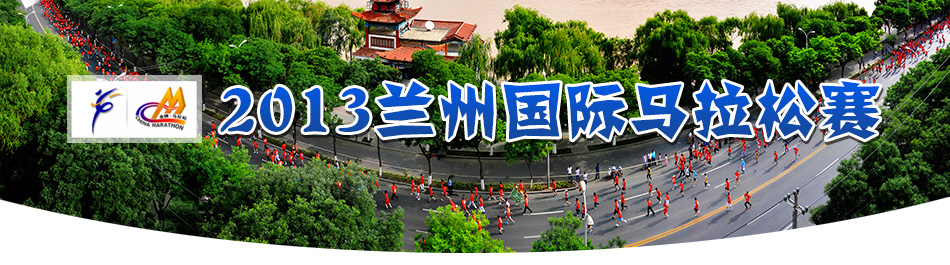
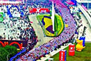
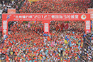

益跑首页
小工具
专题列表

攻略赛记

2013年兰州国际马拉松赛参赛指南
（起点）兰州市东方红广场（向东）→东岗西路→盘旋路十字（左转向北）→天水中路→雁滩桥十字→雁滩公园→天水北路→（左转）
帅克：老黄的兰州牛肉面马拉松
马拉松前一月、一周和当天的26个提示
香荣永川：2012兰州国际马拉松：慢并快乐着
简单跑的兰州马拉松
多数初级跑者倾向于脚跟先落地
初马必看：男性跑者防摩擦方法
马拉松比赛前的作息与生活调整
剪好脚趾甲 跑得更舒服
赛事新闻

2012年十大体育营销城市 :兰州因国际马拉松赛登榜
新华社北京１月８日体育专电（记者周欣）２０１２年不仅仅是奥运年、体育年，更是中国体育营销走向成功辉煌的一年，８日，２０１２（第八届）中国体育营销论坛年会在北京举行，发布了包括海南万宁等在内获得年度十大体育营销城市和中视体育和中国电信推出的“欧洲杯足球赛《豪门盛宴》短信互动”等十大体育营销案例。
兰州将添马拉松文化景观休闲运动带
袁占亭 力争把“兰马”打造成国际金牌赛事
百万森林项目正式携手2013年兰州国际马拉松
兰州迎接马拉松雁滩美化滩尖子湿地公园显雏形
25000个参赛名额已满:兰州马拉松赛5公里报名结束
兰州跑吧举行迎接兰马“五一”半程马拉松联谊跑
2013兰州国际马拉松赛-百万森林慈善跑选手招募启动
2013兰州国际马拉松赛体育文化节5月12日开幕
兔子军团
益跑网美津浓兔子团兰州兔子名单帅哥篇
（No.23）越跑越野兔：＠酒酣诗人姓名：吕国栋 新浪微博ID：@酒酣诗人 擅长配速：330-415他是“一路坦途”的80后，从小在父母栽培下学习油画和武术，是家长和老师眼里的优等生，天生一副儒雅谦和的模样，大学顺利毕业后即进入事业单位继续他的人生坦途
益跑网美津浓兔子团兰州兔子名单
益跑网美津浓兔子团兰州兔子名单美女篇
赛事简介
兰州国际马拉松赛事简介
兰州国际马拉松创办于2011年，是由中国田径协会、甘肃省体育局、兰州市人民政府共同主办的一项赛事，已连续举办了两届。该赛事是我省、我市迄今组织的规模最大、参赛人数最多的国际体育赛事，在国内外产生了广泛影响。
“兰州银行杯”2013兰州国际马拉松赛竞赛规程